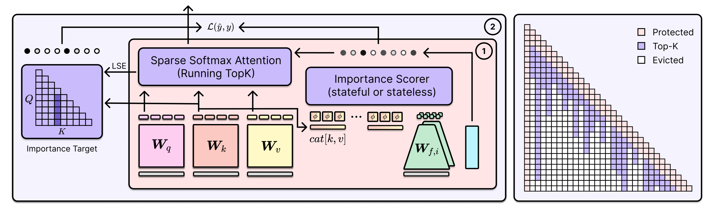
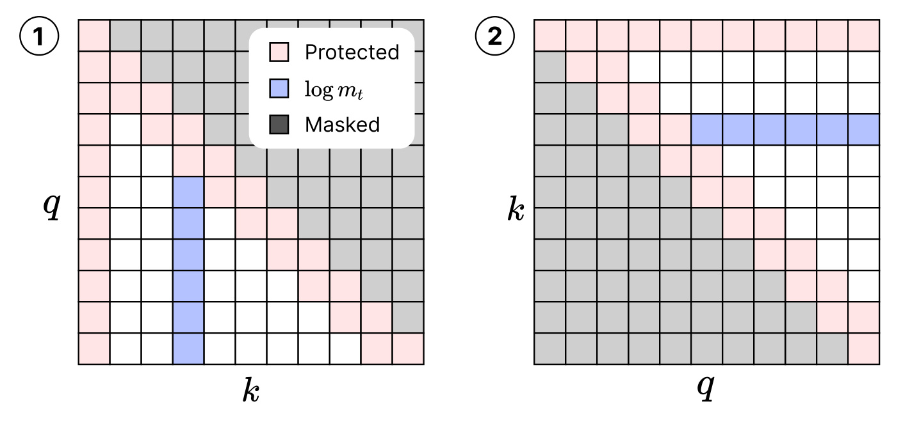
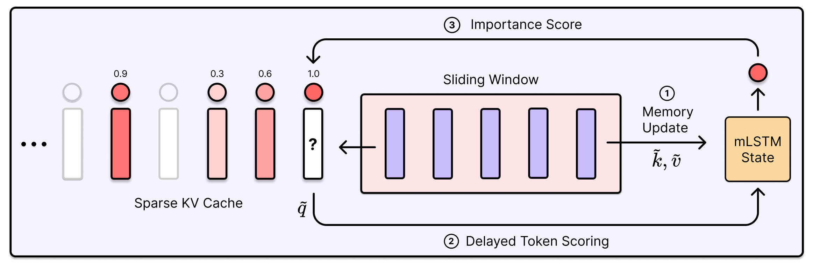
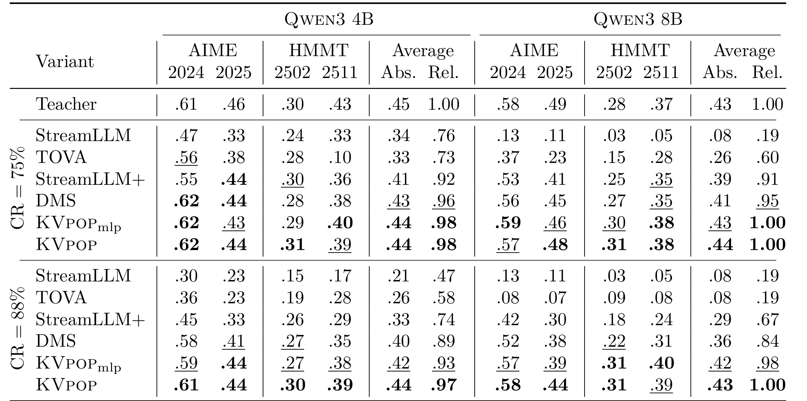
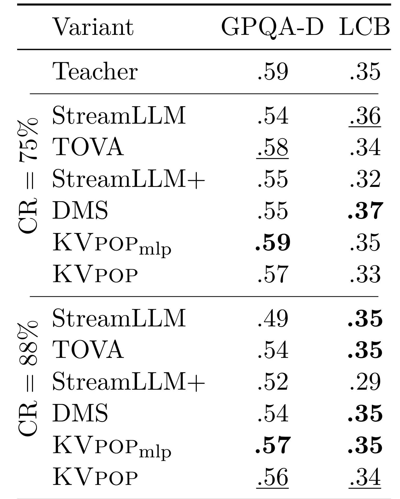
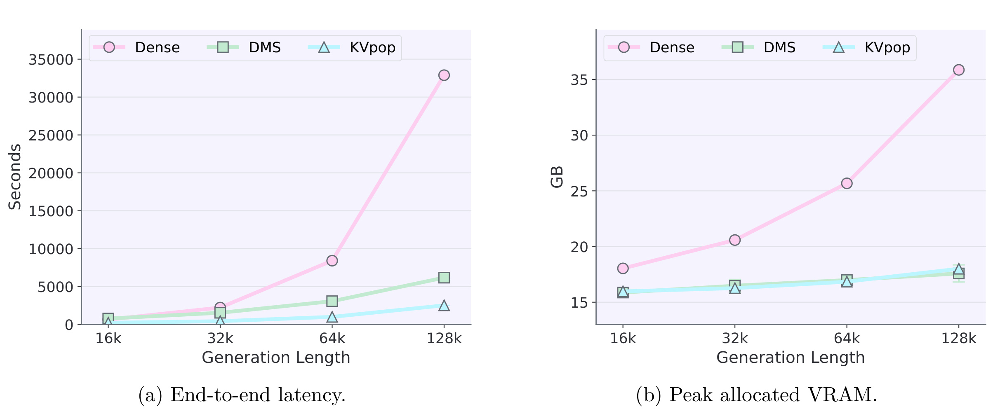
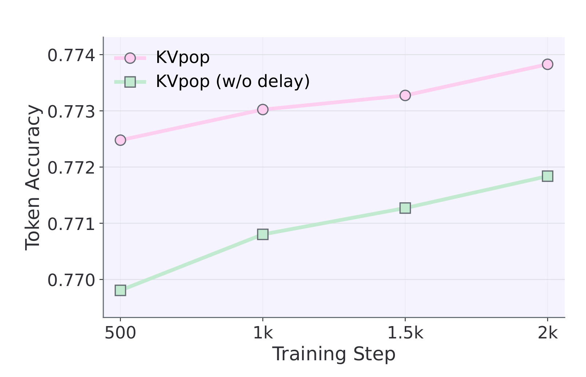
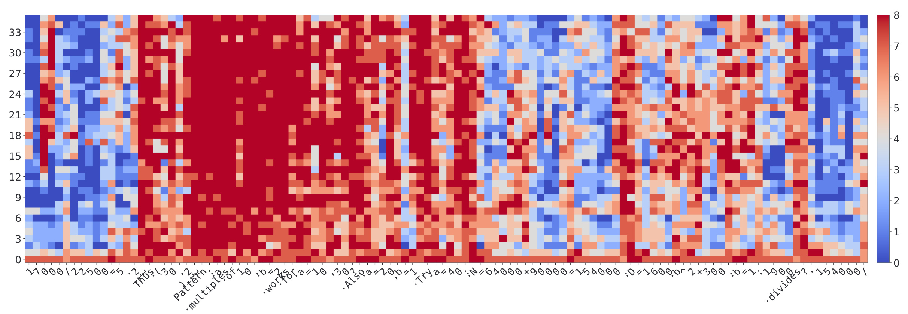
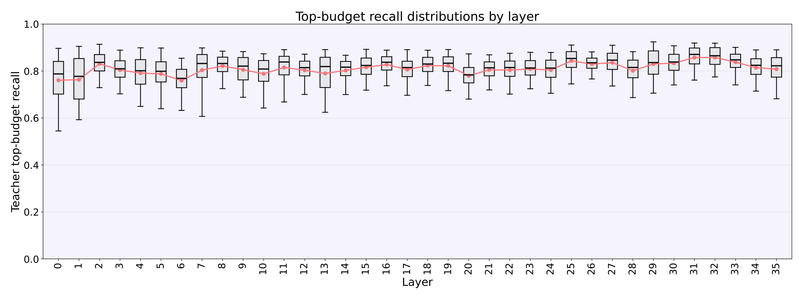
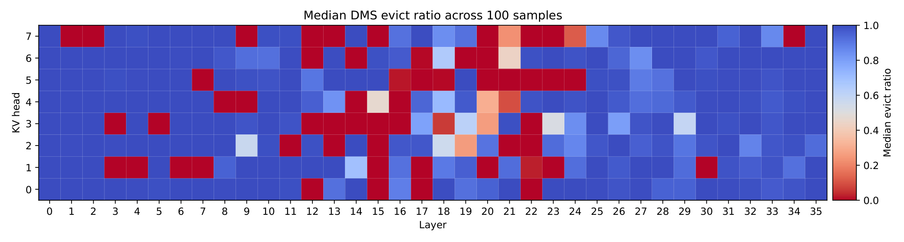

KVpop -- Key-Value Cache Compression with Predictive Online Pruning 精读笔记
KVpop 是 Johannes Kepler University Linz 与 NXAI 团队提出的 KV cache 压缩方法，论文入口为 arXiv:2607.05061，公开日期为 2026-07-06。一作 Lukas Hauzenberger 标注机构为 NXAI 与 Johannes Kepler University Linz, Austria，作者列表中 Thomas Schmied 的工作说明为曾在 NXAI 完成。论文页和 PDF 首页没有给出可公开核验的 GitHub 仓库链接；PDF 首页出现 sirluk/Qwen3-8B-KVpop-4x 字样，本轮外部检查显示 GitHub 同名路径不可访问，Hugging Face 页面需要认证或不可公开读取，因此代码/模型状态只能记为“有句柄线索，但公开访问未核验”。
这篇论文讨论的是长上下文自回归解码里的一个很实际的问题：KV cache 本来是让逐 token 生成更快的工程机制，但上下文越长，缓存的 key/value 越多，显存、带宽和解码延迟都会被拖住。KVpop 的核心思路不是让每个 query 临时少看一些 token，而是在每个 KV head 里维持一个固定大小的缓存预算，学习哪些旧 token 应该真正留下来。
KV cache 的内存和带宽会随上下文长度线性增长，而现有淘汰方法常依赖静态规则或即时 proxy score，难以预测一个 token 在未来多步后是否仍会被用到；局部显著的 token 可能很快失效，当前 attention 很低的 token 又可能在后续推理链中重新变关键，因此压缩 KV cache 的核心矛盾是：在不物化昂贵未来注意力图的前提下，在线判断哪些 token 对未来 query 仍有用。
1. 背景和问题
Transformer 解码里的 KV cache 是一个典型的“用空间换时间”设计。每生成一个新 token，模型把历史 token 对应的 key 和 value 留在缓存中，下一步 query 可以直接访问这些历史表示，不需要从头重算完整序列。短上下文时，这个机制几乎只有收益；但在长上下文、多轮推理、代码生成、数学解题和 agent 轨迹里，缓存长度会随上下文增长而线性扩大，显存容量、显存带宽和注意力读取都会成为推理吞吐的约束。论文把这个问题放在 Qwen3 reasoning 模型上评估，是因为数学推理轨迹经常包含许多中间计算、符号变换和自然语言连接词，哪些 token 应该留下并不等同于“最近的 token 最重要”。
已有 KV cache 缩减方法大致有两类。第一类是 sparse retrieval：保留完整历史缓存，只在当前 query 读取时选择部分 page、block、landmark 或 token group。它能减少当前 attention 的读写和计算，但完整 KV 仍在内存里，所以不解决持久显存占用的上界问题。第二类是真正的 eviction：永久丢掉一部分旧 token，让缓存大小受到硬预算控制。StreamingLLM 这类结构规则会保留 sink token 和最近窗口；TOVA、H2O、PyramidKV 等方法会基于 attention 或相似度 proxy 给 token 打分；DMC、DMS 等学习式方法会在 retrofit 阶段训练压缩或淘汰策略。KVpop 属于第二类，而且特别强调固定预算，因为固定预算比动态、ragged 的每头缓存更容易被 GPU kernel 和编译器执行。
难点在于 token utility 是未来概念，不是当前可直接读出的属性。一个 token 在当前步 attention 高，不代表未来仍要被引用；一个变量定义、推理转折词或中间结论当前可能 attention 不高，却可能在几十步以后决定解题链是否闭合。启发式方法用近期 attention、累计 attention 或 query-local similarity 近似未来效用，容易在 relevance shift 时失真；学习式方法如果只在 token 插入缓存时打分，也会错过它在 protected window 内积累的新证据。论文引言里特别区分了“延迟删除”和“延迟决策”：DMS 可以让一个被标记为删除的 token 在滑动窗口里暂时还能被看见，但其保留倾向通常已经较早决定；KVpop 希望等 token 真正离开保护窗口、开始竞争长期缓存槽位时，再根据近未来上下文做保留/淘汰判断。
从工程角度看，这个问题还牵涉训练目标如何构造。最直接的 teacher 是 full attention：如果我们知道每个旧 token 在离开保护窗口以后会被未来 query 分到多少注意力质量，就可以把“未来仍有用”的 token 留下。然而 dense causal attention map 是 $S \times S$ 规模，直接物化会抵消 KV cache 压缩在训练侧的可行性。KVpop 的第一项贡献是把这个 future-attention mass 变成可以由转置 attention kernel 计算的监督目标；第二项贡献是把 supervised target 用在固定预算 top-k 的边界比较上；第三项贡献是引入 delayed memory-based scorer，让 scorer 在 token 进入可淘汰边界时拥有近未来上下文。
这也是它和推荐/检索系统有相似处的地方：长上下文 LLM 的 KV cache 像一个在线候选池，系统必须在每一步预算固定的条件下选择“未来最可能被召回”的历史 token。不同的是，这里的 ground truth 不是点击或转化，而是 full-attention teacher 给出的未来注意力质量；排序不是离线全量排序，而是每个 query 位置都会有一个新 token 进入 eligible set，并且长期缓存要维持 top-k。理解 KVpop 时，最好把它看成一种专门用于推理缓存的在线学习排序器，而不是简单的剪枝规则。
2. 方法
2.1 固定预算稀疏 KV 缓存
KVpop 对每个 KV head 设置三个保留区域：前 $s$ 个 sink tokens、最近 $w$ 个 protected window tokens，以及从更旧 token 中按 learned score 选出的 long-range top-k tokens。这样推理时每个 head 的缓存预算是一个显式常数：
符号解释：$B$ 是每个 KV head 在解码时允许保留的总缓存条目数，$s$ 表示始终保留的开头 sink token 数，$w$ 表示暂时不参与淘汰的最近窗口长度，$k$ 表示长期缓存中按重要性分数保留的旧 token 数。这个式子看起来简单，但它是整篇论文的工程约束：只要 $s,w,k$ 固定，解码时的 KV footprint 就不再随上下文线性增长。

Figure 1 把训练和推理路径放在同一张图里。左侧 importance target 是训练时用于监督 scorer 的 future-attention 信号；中间 sparse softmax attention 接收保留下来的 token 集合；右侧稀疏模式显示 protected、top-k 和 evicted 三种状态。图里最值得注意的是 scorer 并不改变 backbone 的主干结构，而是每个 KV head 旁边挂一个轻量模块，输出 token 重要性排序。推理时 attention 只在 retained set 上计算，训练时额外算 future-attention target 监督这个排序。也就是说，KVpop 的压缩发生在“缓存成员选择”层，而不是要求重训一种新的注意力架构。
训练流程可以概括为：先用学生模型的 scorer 得到每层每个 KV head 的 token score，再构造固定预算 sparse mask，学生在 sparse attention 下前向；与此同时，用 teacher 或近似的 future-attention 目标给 scorer 施加 retention loss。主语言模型部分仍用 teacher distillation 的 KL 约束，使 sparse 学生尽量接近 dense teacher 的输出分布。论文说明 scorer 输入来自 cached keys 和 values，并且这部分输入从 backbone 梯度图中 detach，意味着 retention loss 主要训练 scorer，而 base model 的适配依赖 distillation objective。
KVpop 的核心不是“让模型少看一些历史”，而是把长期 KV 槽位变成每个 head 内的固定预算 top-k 选择问题。 这使得它和 sparse retrieval 有本质区别：sparse retrieval 可能每步只读少量 token，但完整 KV 仍保留；KVpop 则永久驱逐不进入预算的 token，显式降低持久缓存。
2.2 future-attention 目标与边界损失
KVpop 的监督目标来自一个直觉：如果 token $t$ 离开 protected window 以后，仍持续被未来 query 分到注意力质量，那么它应该比只在局部有用的 token 更值得保留。论文先定义每个 query group 的 future-attention mass：
符号解释：$h$ 是 KV head，$g$ 是共享该 KV head 的 query group，$t$ 是 key token 位置，$d$ 是未来 query 位置，$w$ 是保护窗口长度，$A_{d,t}^{(h,g)}$ 是 dense causal attention 里 query $d$ 分给 key $t$ 的概率，$N_t$ 是可用未来 query 数。这个公式衡量的是 token 离开最近窗口之后，在未来多步里平均还能得到多少 attention mass。
跨 query group 聚合后，目标分数写成：
符号解释：$r_{h,t}^{\mathrm{tgt}}$ 是 KV head 级别的目标重要性分数，$G_h$ 是共享同一 KV head 的 query group 数，$\epsilon$ 用于数值稳定。取 log 的作用是压缩 future mass 的动态范围，避免极少数高注意力 token 主导 scorer 学习。
真正参与长期缓存竞争的 token 集合是：
符号解释：$q$ 是当前 query 位置，$E(q)$ 排除了 sink 区域和最近 $w$ 个 protected tokens。新进入 eligible set 的 token 是 $t_{\mathrm{new}}=q-w$，它刚刚离开保护窗口，必须和历史 long-range cache 里的 token 竞争 top-k 槽位。
为了避免一个早期高分 token 永远占槽，KVpop 给目标和预测分数都加上衰减项：
符号解释：$n$ 是 decay step size，$\gamma_h$ 是每个 head 的衰减因子。因为 $\log \gamma_h$ 为负，token 越旧，effective score 越会被压低。这样新的、仍有未来价值的 token 有机会替换旧 token，长期缓存不会被少数早期 token 垄断。
训练时，teacher 依据上述目标分数在 $E(q)$ 中选 top-k。边界 token $t_{\mathrm{bnd}}$ 是 teacher top-k 中分数最低的那个，决定了刚离开窗口的 $t_{\mathrm{new}}$ 是否被保留。标签定义为：
符号解释：$y_{q,h}$ 是一个边界二分类标签，但它不是普通 token 分类，而是“新 token 是否应该排到 teacher cutoff 之上”。这让训练焦点落在真正会改变 cache membership 的比较上。
KVpop 使用 pairwise logistic loss：
符号解释：$\hat r$ 是 scorer 预测的 effective score，$\tau$ 是温度，$\omega_{q,h}$ 是可选权重。若 teacher 认为新 token 应保留，loss 推动 $\hat r_{new}$ 高于边界 token；若 teacher 认为应淘汰，loss 推动它低于边界。论文还在附录中用 teacher margin 和 keep/drop balance 调整权重，降低近似平局样本的噪声。
2.3 转置注意力与 running top-k
如果直接根据 dense attention map 计算 $m_t$，训练会需要保存或遍历 $S \times S$ 概率矩阵。KVpop 的关键实现是把未来注意力质量写成 log-sum-exp 形式：
符号解释：$\ell(d,t)$ 是 query $d$ 和 key $t$ 的 pre-softmax attention logit，$\mathrm{LSE}_d$ 是对应 query 的 log-sum-exp normalizer。这个式子说明，每个 key 的未来 attention mass 可以看成沿 dense attention 矩阵某一列对未来 query 做归约。

Figure 2 解释了为什么“列归约”可以转成 attention kernel 友好的“行归约”。左图里蓝色竖条代表固定 key $t$ 被未来 query 分到的 mass，直接算需要沿列聚合；右图把原来的 key 位置当作 transposed pass 的 query，把原来的 query 位置当作 key，点积仍恢复原 attention logit。再减去原 query 的 LSE，并用 mask 约束 $d \geq t+w$，attention kernel 返回的辅助 LSE 就给出了 Eq. (8) 的第一项。这个目标只在训练 scorer 时使用，推理阶段不需要额外 transposed pass。
论文还用 sparse attention pass 返回的 $\widetilde{\mathrm{LSE}}$ 近似 dense causal LSE，进一步降低训练成本。这个近似的含义是：学生已经在固定预算 sparse mask 下计算 attention，如果 retained set 捕获了大部分 softmax mass，那么 sparse normalizer 足以提供可用的 teacher signal。这里存在一个潜在风险：早期训练时 sparse policy 尚不稳定，sparse LSE 可能偏离 dense LSE；论文的实验结论是该近似在下游表现上足够有效，但复现时应检查 exact target 与 sparse approximation 的差异。
固定预算 sparse mask 在训练和 prefill 阶段需要并行构造。对每个 query $q$，保留集合为 sink、recent window 和 eligible set 中 rank 不超过 cutoff 的 token：
符号解释：$M_{q,t}$ 是 sparse attention mask，$\mathrm{rank}(t)$ 是 token 根据静态 priority 排出来的名次，$\tau_q$ 是当前 query 下第 $k$ 好 eligible token 的 rank cutoff。推理时只保留 compact cache；训练时为了并行化，论文用 Fenwick tree 在线维护 eligible token rank，并把 cutoff 交给 FlexAttention 的 mask function，避免显式存储 dense boolean mask。
2.4 在线 scorer 与延迟读出
KVpop 的 scorer 可以是 stateless，也可以是 stateful。Stateless 版本把每个 token 的 key 和 value 拼接成 $x_{h,t}=[k_{h,t};v_{h,t}]$，再用 headwise linear 或 MLP 预测 $\hat r_{h,t}$。这种方式开销小，但它只能看到 token 自己在插入时的表示，不能利用之后 protected window 内发生的上下文变化。
Stateful 版本使用 mLSTM 风格记忆。给定 $x_{h,t}$，先得到写入和读取特征，再更新矩阵记忆与 normalizer：
符号解释：$C_{h,t}$ 是每个 KV head 的矩阵记忆，$z_{h,t}$ 是 normalizer，$i$ 和 $f$ 分别是 input gate 与 forget gate，$\tilde k$、$\tilde v$ 是 scorer 投影后的特征。这个记忆跟主模型 KV cache 不同，它服务于 scorer 的保留判断。
当 query 到达 $q$ 时，刚离开保护窗口的 token 是 $u=q-w$。Stateful scorer 已经处理到 $q$，因此可以用 token $u$ 的 read query 去读包含近未来上下文的记忆：
符号解释：$h_{h,u|q}$ 是 token $u$ 在 query $q$ 时刻读出的 memory state，$a_h,b_h$ 是输出投影参数。它对 token $u$ 来说是“近未来”信息，因为 $C_{h,q}$ 已经看过 $u$ 之后 protected window 里的 token；对解码因果性来说仍是合法的，因为这些信息在 query $q$ 时已经发生。

Figure 3 展示了 delayed scorer 的三步：先用最新 KV pair 更新 mLSTM memory，再用刚离开 sliding window 的 token 读取 memory，最后输出 importance score 参与 keep/evict 排名。这个图能帮助区分 KVpop 和单纯延迟删除：KVpop 延迟的是评分决策本身，因此 scorer 可以利用 protected window 内积累的证据。对一个即将离开窗口的 token 来说，后面几个 token 可能已经暴露它是临时算术中间量、变量定义，还是推理链的连接点；这些信息会进入右侧 mLSTM state，再反馈到左侧 sparse KV cache 的保留决定。代价是 scorer 结构更复杂，训练和实现上要保证 memory state、KV head 分组、delay 边界和 top-k mask 完全对齐；任何 off-by-one 都可能让监督目标和推理策略错位。
3. 实验结果
3.1 数学推理主结果
论文主要在 Qwen3-4B 和 Qwen3-8B 上做 retrofit，任务是 AIME24/25 与 HMMT 2025 年 2 月/11 月的数学推理，指标为 pass@1，并用 16 次 rollout 估计。两档缓存预算 $B\in\{2048,4096\}$ 分别对应 88% 和 75% KV cache compression。实验比较了 dense teacher、StreamingLLM、TOVA、StreamingLLM+、DMS、KVpop 的 MLP scorer 变体和 KVpop stateful 版本。

Table 1 的信息量很大。先看 75% 压缩：Qwen3-4B teacher 平均 pass@1 是 .45，KVpop 达到 .44，相对 teacher 为 .98；Qwen3-8B teacher 平均 .43，KVpop 达到 .44，相对值显示为 1.00。DMS 在 Qwen3-4B 平均 .43、相对 .96，在 Qwen3-8B 平均 .41、相对 .95，已经不差，但 KVpop 仍更接近或达到 teacher。更激进的 88% 压缩下差距更清楚：训练免费的 StreamingLLM 和 TOVA 在 Qwen3-4B 平均只到 .21/.26，相对 .47/.58；KVpop 达到 .44，相对 .97。Qwen3-8B 上，StreamingLLM 和 TOVA 平均都只有 .08，而 KVpop 达到 .43，相对 1.00。
这张表支撑了两个结论。第一，固定预算不必等同于质量坍塌，前提是保留策略要能预测 future utility；第二，学习式 eviction 的训练目标很关键。DMS 同样是 learned sparsification，但它通过可微 gate relaxation 学策略，KVpop 则用 future-attention teacher 直接监督边界比较。论文报告里 DMS 在相对性能上落后 KVpop 8 到 16 个百分点，说明 scorer 架构不是唯一变量，目标信号是否贴近“未来会不会被用到”也很重要。需要注意的是，表里许多数值是数学推理 benchmark 的离线 pass@1，不等于线上交互体验；同时 16 rollouts 的估计仍可能有方差，特别是 AIME/HMMT 这类题量不大的集合。
3.2 跨域泛化
为了避免只证明数学推理训练域内有效，论文把 Qwen3-4B sparse 模型拿去评估 GPQA Diamond 和 LiveCodeBench v6。GPQA-D 偏科学推理，LCB 偏代码生成，和 AIME/HMMT 的题型不同。这个实验不能证明所有长上下文任务都受益，但可以检查 scorer 是否只记住了数学题模板。

Table 2 显示，75% 压缩下 Qwen3-4B teacher 在 GPQA-D/LCB 上为 .59/.35，KVpop 为 .57/.33，KVpop MLP 为 .59/.35，DMS 为 .55/.37。88% 压缩下，KVpop 为 .56/.34，仍接近 teacher 的 .59/.35。这里不能简单说 KVpop 全面领先所有方法，因为表中 DMS、TOVA、StreamingLLM+ 在个别列也相近甚至略高；更稳妥的读法是：KVpop 的 future-attention 训练没有把模型锁死在数学推理域，在另两个 reasoning/code benchmark 上没有出现明显退化。
这个结果对工程落地很重要。很多 KV eviction 方法在一个 benchmark 上能保留质量，但换到代码、检索增强问答或多轮 agent 轨迹时会失败，因为 token 重要性模式不同。KVpop 的泛化证据来自两个额外 benchmark，仍然有限，但至少说明“用数学推理数据训练的 future-attention retention policy”没有只学到 AIME/HMMT 的表面格式。若要用于推荐系统或搜索日志摘要，还需要对包含用户历史、候选列表、工具调用结果的长上下文做专门验证。
3.3 推理效率
KV cache 压缩的意义最终要落到显存和延迟。论文在 Qwen3-8B 上评估 batch size 1、75% KV compression、不同 generation length 下的端到端 decoding latency 和 peak allocated VRAM。对 dense attention 来说，生成越长，KV cache 越大；对 eviction 方法来说，长期缓存理论上应接近常数。

Figure 4 的左图显示端到端延迟，右图显示 peak allocated VRAM。Dense 曲线在 128k generation length 处明显上冲，延迟接近 33000 秒量级；DMS 增长较慢但仍明显高于 KVpop；KVpop 在最长生成长度上保持最低延迟。右图里 dense VRAM 从约 18GB 增长到约 36GB，而 DMS 和 KVpop 只增长到约 19GB 左右。论文解释 KVpop 比 DMS 更快的原因不是单纯压缩率更高，而是每个 KV head 都有同样固定预算，cache layout 更规则；DMS 的 dynamic gates 会让部分 head 接近 dense，部分 head 退化到 sliding window，形成 ragged per-head cache，执行和编译更困难。
这个效率结果有一个边界：论文明确说尚未验证这种优势在 vLLM、SGLang 等 paged KV-cache manager 下是否仍保持。实际线上服务还涉及 batch、prefill/decode 混排、分页内存管理、speculative decoding、量化和并发调度。KVpop 的固定预算对 kernel 友好是可信的，但要转成生产收益，需要配合具体 serving stack 重测。
3.4 延迟评分消融
KVpop 的 stateful 设计声称“等 token 离开 protected window 时再评分”能用到近未来上下文。论文用有无 delayed readout 的 mLSTM scorer 对比 token accuracy，训练步数从 500 到 2000。

Figure 5 里，带 delayed scoring 的 KVpop 曲线始终高于不延迟版本，到 2000 steps 时大约有 0.2 个 token accuracy 点的提升。这个提升不算巨大，但方向稳定，说明近未来上下文确实给 stateful scorer 提供了额外信号。更重要的是，这个图把方法部分的因果解释落到消融证据上：如果只延迟删除而不延迟评分，scorer 仍缺少 protected window 后半段的信息；如果延迟评分，memory 可以先吸收 token 之后的局部上下文，再决定它是否值得进入 long-range top-k。
不过这个消融也提示了一个务实判断：delayed scorer 是锦上添花，不是唯一原因。Table 1 里 KVpop MLP 在不少列已经很强，说明 future-attention target 与边界 loss 本身贡献很大。Stateful scorer 的额外收益可能在更长推理链、更强 relevance shift 或更复杂上下文任务里更明显；在较短任务中，stateless scorer 的低开销可能更划算。
3.5 保留模式与 oracle 一致性
论文不仅给数值，还可视化了 KVpop 实际留下哪些 token。Figure 6 取一个数学推理 trace 的最后 112 个可淘汰 token，横轴是 token 字符串，纵轴是 layer，颜色表示有多少 attention heads 保留该 token。

Figure 6 的直观结论是，KVpop 不只是保留最近 token，也不平均保留所有 token。热力图里一些结构性词、等号、表达式连接片段、推理转折附近会被更多层和更多 head 保留；纯数字或已经完成局部作用的中间计算更容易被丢掉。第一层保留更广，后续层更有选择性，这和已有对 Transformer 层级功能的观察一致：低层更多处理局部和表面信息，高层更偏向任务相关结构。对长链推理来说，这种策略合理，因为最终答案往往依赖中间结论之间的关系，而不是所有算术细节都永久可见。这个案例也说明 future-attention target 的监督对象更接近“后续还会不会被引用”，不是“现在看起来是否显眼”：很多数字片段在局部计算完成后可以释放，而连接不同推导片段的 token 更可能跨越窗口继续产生价值。

Figure 7 把“看起来合理”的保留模式进一步量化。横轴是 Qwen3-4B 的 layer，纵轴是 learned KVpop scorer 与 full-attention teacher top-k retained tokens 的 recall。多数层的分布集中在 0.75 到 0.9 区间，论文文字给出的 global mean recall 为 81%。这说明 scorer 学到的不是任意稀疏模式，而是在相同缓存预算下相当程度复现了 future-attention oracle 的 top-k 选择。它也解释了为什么 KVpop 在 88% 压缩时仍能保持质量：如果 top-k 槽位主要留给 teacher 认为未来会用到的 token，压缩就更像有监督的候选筛选，而不是盲目剪枝。

Figure 8 是对 DMS 的补充解释。颜色越接近 0，表示越接近 dense/full attention；越接近 1，表示越接近只看 local sliding window。可以看到 DMS 的 eviction ratio 在 head 和 layer 之间非常不均衡：部分 head 长期保留大量长程 token，另一些 head 大量退化到局部窗口。这种 winner-takes-all 式分配可能在质量上还能工作，但对执行系统不友好，因为不同 head 的 cache 形状不规则。KVpop 固定每个 head 的 long-range budget，牺牲了一部分动态自由度，换来更可控的内存和 kernel 形态。对生产推理系统而言，这种可控性往往和平均 benchmark 分数同样重要。
4. 总结
4.1 我的判断
KVpop 的价值在于把 KV cache eviction 从启发式规则推进到“future utility supervised ranking”。它没有试图重新设计大模型主干，而是在 retrofit 阶段为每个 KV head 学一个轻量保留策略，并用 full-attention teacher 的未来注意力质量监督边界决策。方法上最关键的三点是：固定预算 $B=s+w+k$ 让推理缓存有硬上界；转置 attention 让未来注意力目标在训练中可计算；delayed mLSTM scorer 让新进入 eligible set 的 token 能根据近未来上下文再决定是否进入长期缓存。
我会把这篇论文归为“LLM 推理系统和长上下文压缩”方向，而不是通用稀疏注意力论文。它对推荐/搜索工程的启发也比较明确：当系统面对超长用户历史、长会话、多轮工具调用或 RAG trace 时，固定预算候选池需要的不是简单最近性，而是能够预测未来效用的在线排序器。KVpop 的 teacher signal 来自 attention mass；在推荐系统里，对应信号可能是后续点击、转化、满意度或人工评测偏好。二者共享的问题是：预算固定、决策在线、当前弱信号不一定代表未来价值。
4.2 局限与风险
第一，实验主线集中在 Qwen3-4B/8B 和数学推理，虽然有 GPQA-D 与 LCB 迁移，但还不足以证明在 RAG、agent、多文档问答、长视频字幕或真实用户日志上同样稳定。第二，future-attention target 依赖 teacher attention 的质量；如果 dense teacher 本身在某类任务上关注模式不可靠，scorer 会学习到有偏目标。第三，sparse-LSE approximation 在训练早期可能和 dense target 有偏差，论文给出经验结果，但复现者应检查 exact target、sparse target 和不同压缩率下的差异。
第四，stateful mLSTM scorer 的实现复杂度不低。它需要处理每个 KV head 的 memory state、延迟边界、Fenwick top-k、FlexAttention mask 和 distillation loss，任何边界位置错误都可能让训练指标看似正常但推理策略错位。第五，论文的效率实验是 batch size 1 和特定实现栈，尚未覆盖 paged KV manager、高并发、多 batch、prefill-heavy 请求和量化部署。第六，公开代码/模型状态本轮未能核验到可直接访问的仓库，因此短期复现成本可能高于论文读起来的工程简洁度。
4.3 后续跟进
后续最值得跟三件事。第一，等待或确认公开实现，重点看 scorer 参数规模、FlexAttention mask、Triton Fenwick kernel 和 delayed readout 的边界处理。第二，在 vLLM 或 SGLang 这类 serving stack 下重测端到端吞吐，尤其是 batch size 大于 1、长 prefill 与长 decode 混合时，固定 head budget 是否仍能转成实际 latency 收益。第三，把 benchmark 扩到 RAG、长会话 agent、代码仓库问答和推荐解释任务，看 future-attention target 是否仍能识别“低即时 attention 但未来关键”的 token。
如果只从论文证据判断，KVpop 是一篇工程导向很强的长上下文推理论文：它把问题定义、训练目标、在线 top-k 实现、可视化证据和效率收益连成了闭环。它还没有证明自己是通用 KV cache 压缩的终点，但提供了一个值得复用的范式：先明确固定预算，再用未来监督训练保留策略，最后用执行系统能接受的规则形态落地。